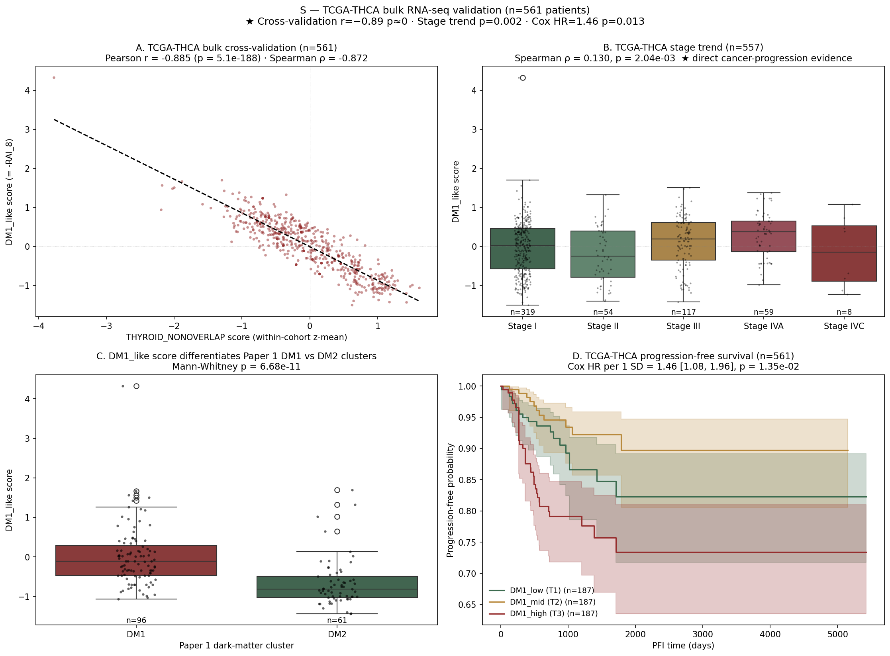
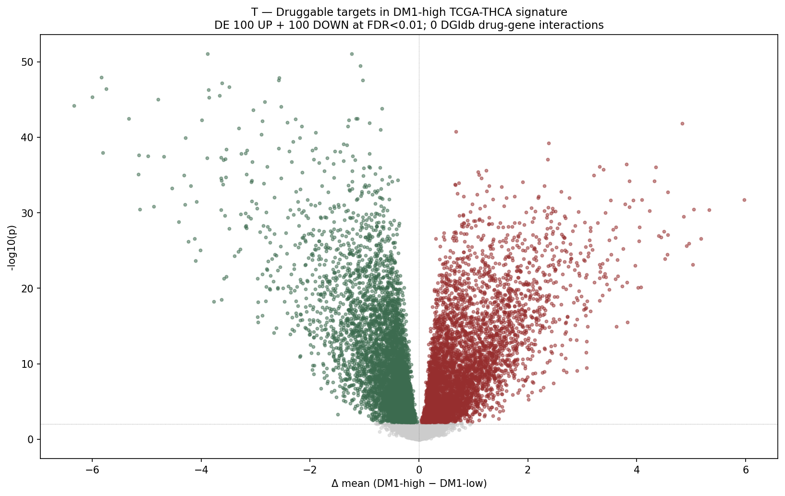

8-gene RAI / DM1_like axis 와 thyroid lineage non-overlap signature 사이의 압도적 anti-correlation. spatial replicate (12 external Visium) r = −0.99 + bootstrap CI [−0.997, −0.916]. 두 platform · 두 cohort · 두 generation 의 consilience — driver mutation 과 직교하는 분자축이다.
한 줄 핵심
PTC 의 재발/탈분화 위험을 가르는 transcriptional axis (DM1/DM2) 가 BRAF / RAS / TERT 변이와 무관 하게 작동한다 — 8-gene RAI 생물학으로 anchor 되어 있고, TF network collapse → DNMT silencing → STAT3/AP-1 activation → TROP2 re-expression 의 4-step 메커니즘 + tumor-population TROP2 vulnerability (sacituzumab 후보) 까지 한 axis 위에서 설명된다.
왜 중요한가
ATA 2015 risk stratification 은 recurrence 3–5% (low) ~ 50–75% (high) 라는 1 order-of-magnitude gap 을 anatomic feature 만으로 메우려 한다. BRAF V600E + TERT promoter 까지 더해도 marginal benefit. DM1/DM2 axis 는 mutation-orthogonal transcriptional layer 로 — driver-negative 환자 (NBNR cluster) 에게 분자생물학적 risk 정의를 제공.
An 8-gene RAI-lineage transcriptional panel (SLC5A5 / TPO / TG / TSHR / PAX8 / NKX2-1 / FOXE1 / DIO1) defines a DM1/DM2 dichotomy that stratifies PTC orthogonally to canonical driver mutations (BRAF / RAS / TERT). The axis is driver-excluded by construction — the 12-gene Driver_anchor category was retained in the candidate pool but ranks at #52–67 (bottom) in DM1-vs-DM2 univariate Cohen's d. The transcriptional collapse pattern (NKX2-1/FOXE1 ↓ + DNMT activation + STAT3/AP-1 ↑) supports a 4-step mechanism culminating in TROP2 re-expression — a tumor-population therapeutic vulnerability.
R1 — Cluster anchor + cross-validation
Effect size
r = −0.885
TCGA bulk DM1_like vs THYROID_NONOVERLAP (n=561) · p = 5.1×10⁻¹⁸⁸
Spatial replicate
r = −0.99
12-slide Visium sample-mean · bootstrap 95% CI [−0.997, −0.916]
Cluster anchor
MW p ≪ 0.001
DM1 cluster mean = 0.00 vs DM2 = −0.66 (n=157)

R1 figure — TCGA 4-panel anchor. DM1/DM2 cluster의 분자축 정의 + DM1_like vs NONOVERLAP scatter 의 압도적 anti-correlation (r=−0.885). 두 platform (bulk + ST) 에서 동일 신호. Source:project_external_st/results/extra/s_tcga_4panel.pngR1 spatial replicate — DM1 vs THYROID_NONOVERLAP across 12 external Visium slides (GSE230424 + GSE248205). 모든 slide 에서 direction-consistent spot-level anti-correlation. Source:project/supplementary/spatial_freeze_2026_05_03/SuppFig_X2_DM1_thyroid_nonoverlap_crossvalidation.png
R2 — Driver mRNA neutrality
왜 이 axis 가 driver mutation 과 다른가 — BRAF / RAS / TERT mutation 이 transcript level 에 propagate 안 함을 직접 증명.
BRAF transcript
d = −0.044
V600E vs WT (n=273 vs 182) · p = 0.567
Driver_anchor cluster ARI
−0.007
12-driver gene panel 만으로는 cluster 정의 불가 (random)
TIERA67 ranking
drivers #52–67
67-gene 후보 pool 에서 driver_anchor 12개 모두 bottom; 8-gene 은 #4–50 (top tier)
R5 — Therapeutic window · n=517 cohort. DM1 p=1.8×10⁻²⁰; TROP2 1.4× tumor > normal-adjacent; metastatic 1.6×. Tumor-population vulnerability framing — sacituzumab govitecan (Trodelvy, FDA approved) 의 thyroid window 가 분자적으로 정량화. 주의: DM1-high spot 단위 colocalization 은 NEGATIVE (Q3 ρ=−0.016), 따라서 "DM1-axis 가 sacituzumab 후보 인구를 정의" 라는 spot-level 주장 금지.

R5 — Drug target volcano · DM1-high vs DM1-low DE. TACSTD2 / TROP2 +4.33, FDR=1.2×10⁻³² · NAMPT (APO866 / FK866) · KCNN4 (Senicapoc) · LYN (Dasatinib off-label) · CYP1B1 · ELF3 — sacituzumab 단일 표적이 아니라 DM1-program-wide therapeutic landscape.
KMeans k=2 on DM1 (n=140) → sub-A (n=84, 51/74 mut-tested RAS+ = 69%, 51/84 = 61% of total) + sub-B (n=56, 53/56 = 94.6% mutation-negative). sub-B Hashimoto-like 12.5% vs sub-A 3.6% (4× rate) — TCGA NBNR equivalent. mutation breakdown 은 Paper 1 main; HM-like rate annotation 은 Paper 2B 에서 받음.
Honest limitations (Paper 1 §3.4 seed)
Honest negative N1 — Dark matter subset (BRAF-neg ∩ RAS-neg, n=156–187) 단독에서 PFI HR=1.20, p=0.80 NS. n underpowered + DM1 prognostic effect 가 driver-mutant tumor 에 집중. dark matter 안에서 DM1 score 는 cluster-discriminating (DM1 vs DM2) 이지 prognostic 아님.Honest negative Q3 — TROP2 spot-level colocalization. 28 slides mean ρ(TROP2, DM1_resid) = −0.016 (random). 14/28 positive (coin flip). Sample-level 은 살아있으나 spot-level 은 NOT — manuscript 에 honest disclosure 로 박제.
N1 dark-matter subset (BRAF-neg ∩ RAS-neg, n=156–187) PFI HR=1.20 NS. DM1 prognostic effect 는 driver-mutant tumor 에 집중.
Q3 TROP2 spot-level ρ=−0.016 (28 slides). Sample-level 만 살아있음. "DM1-high spot = TROP2-high spot" 주장 금지.
v8 outlineproject/reports/2026_05_03_manuscript_v8_OUTLINE.md (current — to be split)
Cross-paper bridges:Paper 2B 가 HT-overlap mechanism 으로 DM2 sub-population 의 mechanism 을 추가 dissection.
Paper 4 가 Korean PTC vs Chu 2018 GD pan-Asian HLA forest carry.
Paper 3 (ICI) 는 molecular envelope 위의 면역치료 readiness layer — Paper 1 ship 후 unlock.
Paper 5 (v17 npj) 는 Paper 1 의 직계 ancestor — manuscript R1–R5 + reviewer FAQ 재활용 가능.
Paper 2A closure battery 는 Methods Supplement 의 negative-feasibility 자산.